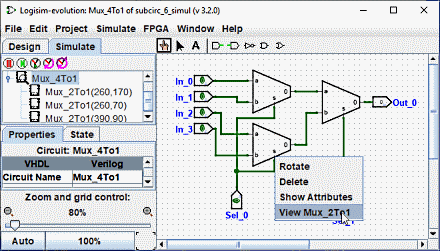

上一节: 自定义外观
调试子电路
当您测试更大的电路时，您可能会发现错误。 为了确定问题所在，在运行整个电路的同时探索子电路中发生的情况会有所帮助。 要进入子电路的状态，您可以使用三种不同技术中的任何一种。
最直接的方法可能是通过单击 Simulate 选项卡或选择菜单 | Project | → | View Simulation Tree | 。 这会切换资源管理器窗格，以便显示正在仿真的子电路的层次结构。

Double-clicking 此层次结构中的元素将显示该子电路内发生的情况。
进入子电路的第二种方法是通过 right-clic or Ctrl+Click 调出其弹出菜单，然后 然后选择选项 | View “电路名称” | 。

第三种方法是首先确保 Poke Tool (
 ) 被选中，然后
click
您要输入的子电路； 子电路中心上方会出现一个放大镜，
double-clicking
放大镜将进入子电路状态。
) 被选中，然后
click
您要输入的子电路； 子电路中心上方会出现一个放大镜，
double-clicking
放大镜将进入子电路状态。

无论如何，一旦进入子电路，您将看到子电路中的引脚值与从包含电路通过它们发送的值相匹配。

在子电路中时，您可以更改电路。 如果更改影响子电路的任何输出，它们将传播到包含电路中。 一个例外：子电路输入是根据从超级电路进入电路的值确定的，因此切换这些值没有意义。 如果您尝试刺入子电路的输入，则会弹出一个对话框，询问： 该引脚与超级电路状态相关联。 创建新的电路状态？ 单击“否”将取消切换请求，而单击“是”将创建所查看状态的副本，与外部电路分离，并切换输入引脚。
完成查看和/或编辑后，您可以通过双击资源管理器窗格中的父电路或通过菜单 | Simulate | → | 转到状态 "circuit_name" | 。
下一节: Logisim-evolution 库 .